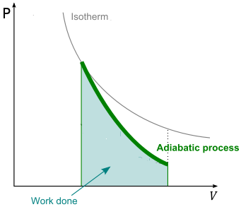

Reversible adiabatic expansion of a perfect gas
When a perfect gas expands adiabatically, a decrease in temperature should be expected: work is done but no heat enters the system, the internal energy falls, and therefore the temperature of the working gas also falls.
The change in internal energy of a perfect gas when the temperature is changed from Ti to Tf and the volume is changed from Vi to Vf can be expressed as the sum of two steps. In the first step, only the volume changes and the temperature is held constant at its initial value. However, because the internal energy of a perfect gas is independent of the volume the molecules occupy, the overall change in internal energy arises solely from the second step, the change in temperature at constant volume. Provided the heat capacity is independent of temperature, this change is
ΔU = CV (Tf − Ti) = CV ΔT
Because the expansion is adiabatic, we know that q = 0 and since ∆U = q + w, then ∆U = w. Therefore, equating the two values for ∆U, yields
w = CV ΔT
That is, the work done during an adiabatic expansion of a perfect gas is proportional to the temperature difference between the initial and final states. That is exactly what we expect on molecular grounds, because the mean kinetic energy is proportional to T, so a change in internal energy arising from temperature alone is also expected to be proportional to ∆T.
We now derive the fundamental equation governing the adiabatic expansion of a perfect gas. For the first law, we can write
δq = dU + PdV = 0
for an ideal gas, equivalent to
CV dT + PdV = 0
By differentiating the state equation for the ideal gas we have
PdV + VdP = nRdT
which yields to
dT = (PdV + V dP)/nR
and
CV (PdV + V dP)/nR + PdV = 0
CV PdV + CV VdP + nRPdV = 0
PdV (CV + nR) + CV VdP = 0
since CP − CV = nR
P ⋅ dV ⋅ CP + CV ⋅ dP = 0 ⇒ dP/P = −CP/CV dV/V
The set the ratio CP/CV = γ and write
∫dP/P = −∫γ ⋅ dV/V
In a limited temperature range, γ can be considered constant, thus
ln P = −γ ln V + ln K
where K is the integration constant, thus
PVγ = K (2.3)
we can use the equation of state of the perfect gas and write this relation as:
TVγ−1 = K (2.4)
or
TP(1 − γ)/γ = K
Equation (2.3) is similar to the equation governing the isothermal transformation of an ideal gas (PV = K). It holds at all equilibrium states through which the ideal gas passes during a quasi-static adiabatic process. It is important to understand that a free expansion is an adiabatic process but it is not quasi-static, because the gas rushing into the vacuum passes through nonequilibrium states before finally achieving equilibrium. Therefore Eq. 2.1 cannot be applied to the states traversed by the ideal gas during a free expansion or any adiabatic process that is not quasi-static.
There is an important fact that holds for any system, not just an ideal gas behind Eq. 2.1: For a reversible adiabatic process the final temperature is a function of the final volume for a given initial state.
Because γ > 1, an adiabat falls more steeply (P ∝ 1/Vγ) than the corresponding isotherm (P ∝ 1/V). The physical reason for the difference is that, in an isothermal expansion, energy flows into the system as heat and maintains the temperature; as a result, the pressure does not fall as much as in an adiabatic expansion. The area under each curve is the amount of work that the expanding gas does on the surroundings during the process. Work done during isothermal expansion of a perfect gas is more than the work done during adiabatic expansion between the same values of initial and final volumes. As the gas does work against the restraining force of the piston, it must absorb heat in order to conserve energy. Otherwise, it would cool as it expands (or conversely heat as it is compressed). Work is pressure times area, given PV = nRT, T stays constant as opposed to dropping in the isothermal process, so whatever P ends up being for the given Vf, it'll be less in the adiabatic process.
